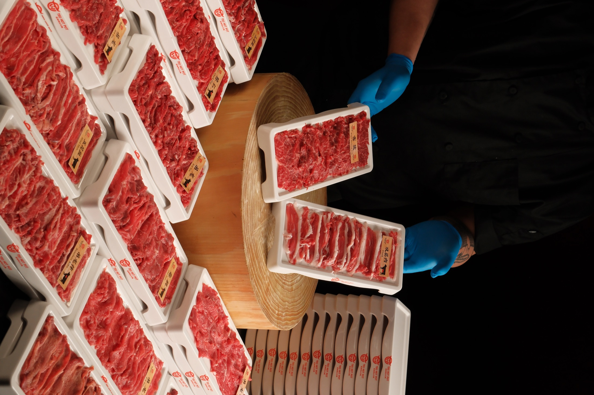
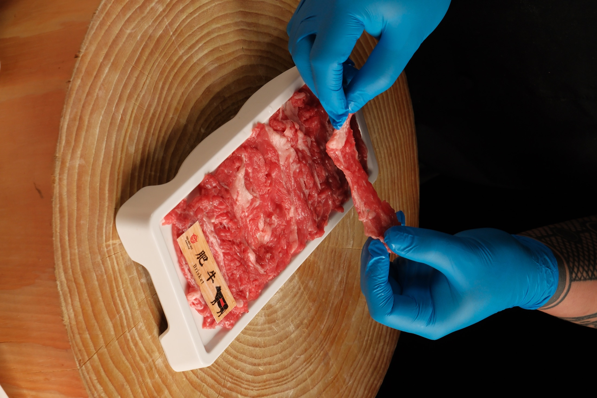
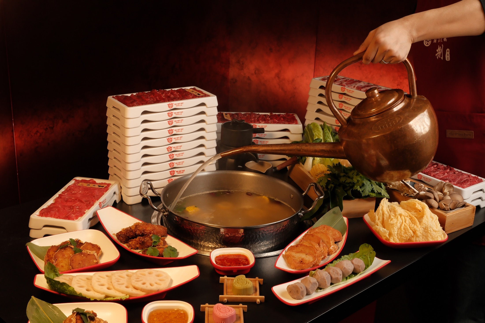

About TEO
Hotpot, but notas you know it.
TEO brings Chaoshan beef hotpot to Store Street: clean broths, fresh British beef and personal pots that let every guest cook at their own pace.

A calmer kind of hotpot
Less heat.
More clarity.
For many Londoners, hotpot means bold broths and a table full of spice. Chaoshan beef hotpot tells a quieter story. From the Chaoshan region of Guangdong, it is built around freshness, careful timing and the natural flavour of beef.
Rather than covering the ingredients, the broth is kept light and balanced. Each slice is cooked briefly, just long enough to bring out its texture, then dipped into a sauce mixed at the table.

The beef
Beef first.
Cut with care.
Beef sits at the centre of the experience. TEO works with fresh British grass-fed beef, including cuts from Angus, Black Angus and Hereford breeds, prepared in-house and sliced according to texture.
Some cuts are lean and clean, some richer and more giving. The point is not excess, but contrast: a table that lets guests taste the difference between each part of the animal.
The table
Your pot.
Your pace.
Every guest has a personal pot, so the meal feels flexible without losing the social rhythm of hotpot. Different broths, different timings and different preferences can sit comfortably at the same table.
For first-time diners, the team can guide the cuts, sauces and cooking times. For those already familiar with hotpot, TEO offers a more refined, lighter way to enjoy it.

A London perspective
Tradition.
London ease.
The experience is relaxed, interactive and precise. A concise whisky selection adds another layer for guests who want to pair beef with something more aromatic, while the heart of the meal remains simple: fresh beef, clean broth and respect for the ingredient.